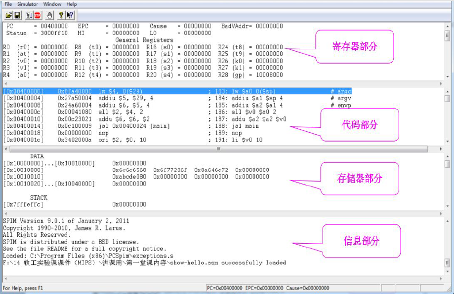
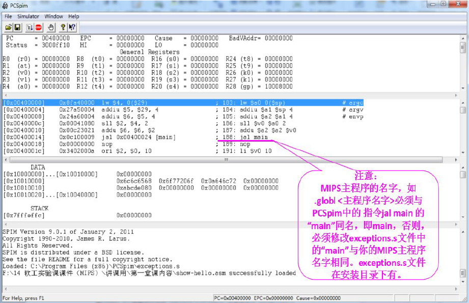
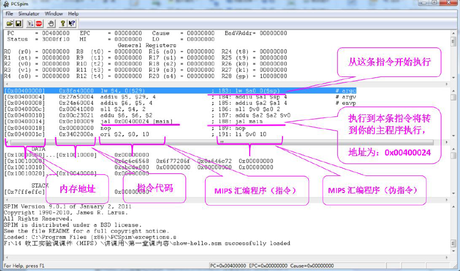
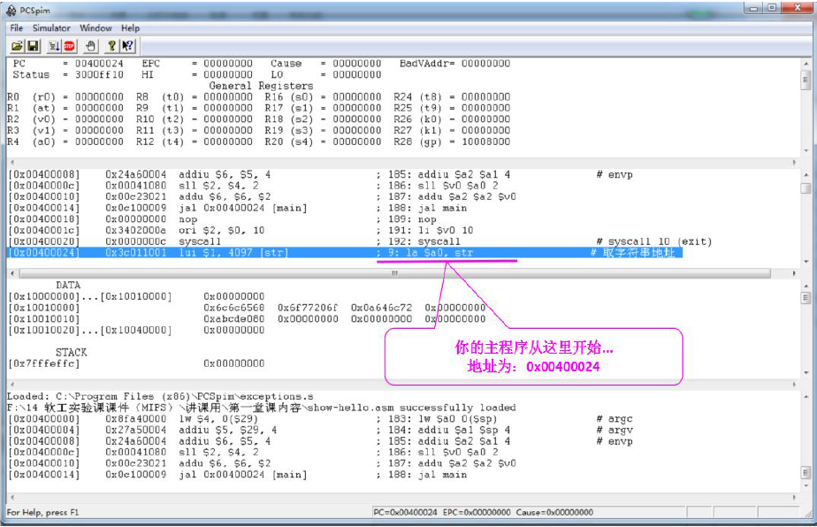
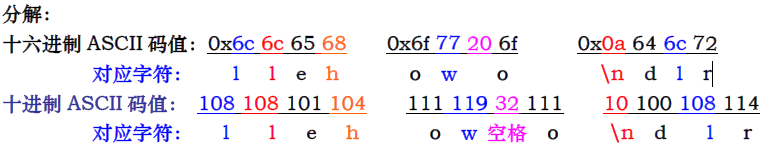
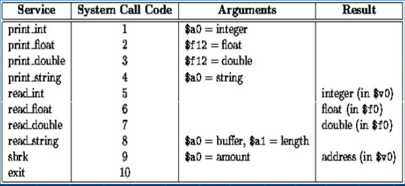
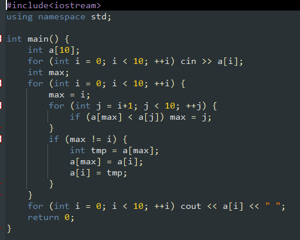
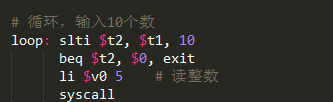
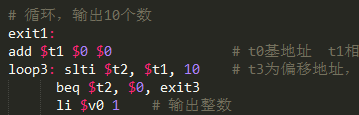
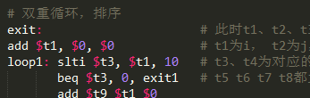

在学习计算机组成原理的时候，我接触到了汇编语言。刚开始可以说是一头雾水，汇编既麻烦又蛋疼，稍微不小心就出错了。但是，汇编作为一种底层语言，学习汇编能让程序员知道机器在软件层面上的最底层操作。熟悉汇编后我们可以更容易的理解c/c++等高级语言如何在机器上执行，这样我们也可以写出更高性能的代码；此外汇编语言能帮助我们进行深度调试或开发工具，比如native调试器、内存/性能剖析工具等。下面就进行简单的语言介绍，以及用汇编语言写选择排序。
简单Hello World
PCSpim
进行汇编语言开发需要用到PCSpim软件，Spim没有提供编辑器，你可以任选你喜欢的editor编辑文件，本人一般使用sublime text3，简单而功能又强大，文件保存为.asm或.s。下面是界面介绍：




Hello World
学习一门语言最开始的就是学习hello world，相信你也是精通各种语言的hello world的程序员哈哈。通过最简单的hello world我们可以了解最基础的汇编语法：
1 2 3 4 5 6 7 8 9 10 11 12 13 14 15
| .text # 代码段声明 .globl main # globl 指明程序的入口地址main main: # 入口地址main la $a0, str # 取字符串地址 li $v0, 4 # 4 号功能调用，输出字符串 syscall # 系统调用，输出字符串 li $v0, 10 # 退出 syscall # 系统调用 .data # 数据段声明 str: # 变量名称 .asciiz "hello world\n" # 字符串定义 memory: # 变量名称，数据存储结构 .word 0xabcde080 # 数据定义，32 位长度
|
Spim模拟器中是以8 位长度的十六进制数为一个显示表示单位，但存储是以字节为单位，即一个字符为存储单位。字符串存储按字符串顺序存放在内存中（字符从左到右，地址由低到高），当然，保存在内存中是它们的ASCII 码值。
存储结构分析：关于”hello world\n”，如，[0x10010000]=0x68（‘h’）,[0x10010001]=0x65（‘e’）,十六进制ASCII 码值：20 (sp 空格) ， 0a (LF，换行符\n)

System call
汇编的系统调用，执行输入输出等操作：

选择排序
下面实现从内存中读取10个无符号字数并从大到小进行排序，排序结果在屏幕上显示出来。你随机输入10个数，然后输出这10个数从大到小的排序。思路为：先写出正确的c++代码，然后再将代码“翻译”为汇编代码。这样，思路清晰而且不易出错，减少bug产生。
C++代码

翻译
主要分为三部分：先写出接受输入的正确的代码；正确的输出代码；正确的选择排序代码。在三部分都正确的前提下即完成转换，而且debug也比较简单。



下面是完整代码：
1 2 3 4 5 6 7 8 9 10 11 12 13 14 15 16 17 18 19 20 21 22 23 24 25 26 27 28 29 30 31 32 33 34 35 36 37 38 39 40 41 42 43 44 45 46 47 48 49 50 51 52 53 54 55 56 57 58 59 60 61 62 63 64 65 66 67 68 69 70 71 72 73 74 75 76 77 78 79 80 81 82 83 84 85 86 87 88
| .text .globl main main: la $t0 a # t0基地址 t1相当于i t2判断是否小于10 add $t1, $0, $0 # t3为偏移地址，a[i]的地址 # 循环，输入10个数 loop: slti $t2, $t1, 10 beq $t2, $0, exit li $v0 5 # 读整数 syscall sll $t3 $t1 2 add $t3 $t3 $t0 sw $v0 ($t3) addi $t1 $t1 1 j loop # 双重循环，排序 # for (int i = 0; i < 10; ++i) { exit: # 此时t1、t2、t3 无用，t0基地址 add $t1, $0, $0 # t1为i， t2为j， t9为max loop1: slti $t3, $t1, 10 # t3、t4为对应的判断， t5显示max和i是否相等 beq $t3, 0, exit1 # t5 t6 t7 t8都为临时的，随意更改 add $t9 $t1 $0 # max = i; addi $t2 $t1 1 # j = i + 1 loop2: slti $t4 $t2 10 # for (int j = i+1; j < 10; ++j) { beq $t4, 0, exit2 # sll $t5 $t9 2 # if (a[max] < a[j]) { sll $t6 $t2 2 # add $t5 $t5 $t0 # add $t6 $t6 $t0 # lw $t7 ($t5) # a[max] # max = j; lw $t8 ($t6) # a[j] # slt $t5 $t7 $t8 # beq $t5, 1, change # bne $t5, 1, nochange # } change: # add $t9 $t2 $0 # addi $t2 $t2 1 # j loop2 # nochange: # addi $t2 $t2 1 # j loop2 # } exit2: # bne $t9, $t1, change1 # if (max != i) { beq $t9, $t1, nochange1 # int tmp = a[max]; change1: # a[max] = a[i]; sll $t5 $t9 2 # a[i] = tmp; add $t5 $t5 $t0 # lw $t7 ($t5) # a[max] # sll $t6 $t1 2 # add $t6 $t6 $t0 # lw $t8 ($t6) # a[i] # sw $t7 ($t6) # sw $t8 ($t5) # addi $t1 $t1 1 # j loop1 # nochange1: # addi $t1 $t1 1 # } j loop1 # } # 循环，输出10个数 exit1: add $t1 $0 $0 # t0基地址 t1相当于i t2判断是否小于10 loop3: slti $t2, $t1, 10 # t3为偏移地址，a[i]的地址 beq $t2, $0, exit3 li $v0 1 # 输出整数 sll $t3 $t1 2 add $t3 $t3 $t0 lw $a0 ($t3) syscall li $v0 4 # 输出空格符 la $a0 bb syscall addi $t1 $t1 1 j loop3 exit3: li $v0 10 # 退出 syscall .data a: .space 40 bb: .asciiz " "
|